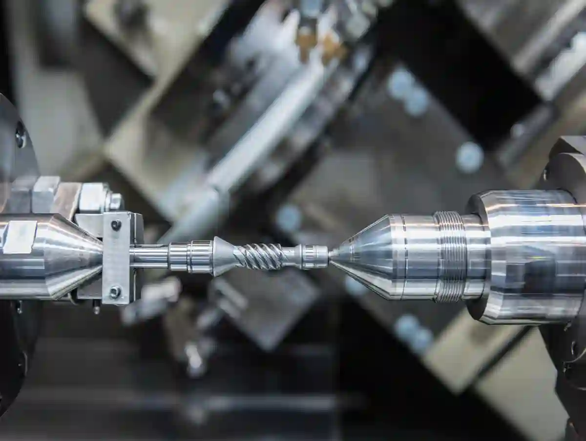
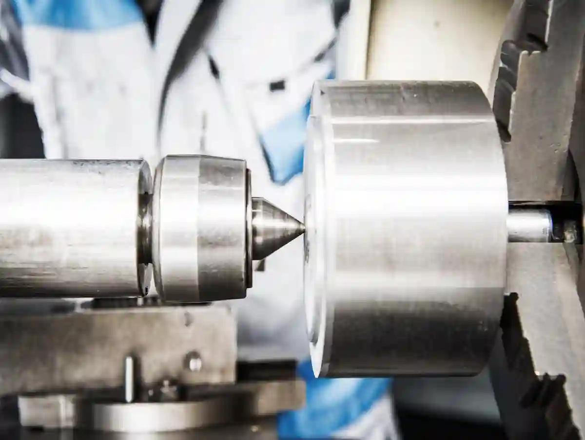
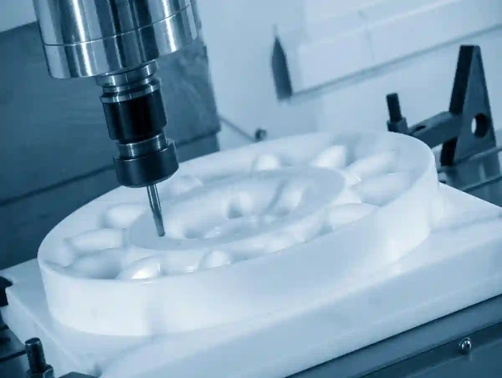

CNC Üretimde Malzeme Seçimi ve Kullanılan Malzemeler
CNC üretimde malzeme seçimi, talaşlı imalat süreçlerinin tamamını doğrudan etkileyen stratejik bir karardır. Seçilen malzeme; kesme parametrelerinden takım ömrüne, yüzey kalitesinden tolerans başarımına kadar birçok teknik çıktıyı belirler. Bu nedenle CNC tezgâhlarında başarı yalnızca makine parkuruna değil, doğru malzeme bilgisinin üretim sürecine entegre edilmesine bağlıdır.
Özellikle seri üretim veya hassas tolerans gerektiren projelerde, malzemenin mekanik ve termal özellikleri göz ardı edildiğinde, üretim süreci beklenenden daha maliyetli ve riskli hale gelir. Bu noktada cnc malzeme özellikleri, yalnızca teknik bir detay değil, üretim stratejisinin temel yapı taşıdır.
CNC Üretimde Malzeme Seçimi Neden Kritik Bir Karardır?
CNC tezgâhlarında işlenen her malzeme, kesici takım ile farklı bir etkileşim sergiler. Sertlik, süneklik, ısıl iletkenlik ve talaş oluşum karakteri; üretim sürecinin kararlılığını belirler. Yanlış malzeme tercihi, takım kırılmaları ve ölçüsel sapmalar gibi ciddi problemlere yol açabilir.
Bu nedenle cnc için uygun malzemeler belirlenirken sadece nihai ürün beklentisi değil, üretim hattının teknik kapasitesi de dikkate alınmalıdır. Aksi durumda yüksek hassasiyet hedeflenen projelerde tekrar işleme ve fire oranları kaçınılmaz olur.
Malzeme Türü ve İşlenebilirlik İlişkisi
İşlenebilirlik, bir malzemenin CNC tezgâhlarında ne kadar stabil ve kontrollü şekilde işlenebildiğini ifade eder. Bu özellik, kesme kuvvetlerini, takım aşınmasını ve yüzey pürüzlülüğünü doğrudan etkiler.
Örneğin alüminyum cnc işleme süreçlerinde talaş kırılması kolaydır ve yüksek ilerleme hızları mümkündür. Buna karşılık yüksek karbonlu çeliklerde, daha düşük kesme hızları ve kontrollü soğutma gereklidir. Bu farklılıklar, üretim planlamasında ciddi zaman ve maliyet farkları oluşturur.
Tolerans ve Yüzey Kalitesi Üzerindeki Etkiler
Malzeme seçimi, CNC üretimde tolerans başarımının temel belirleyicisidir. Termal genleşme katsayısı yüksek olan malzemeler, uzun süreli işlemlerde ölçüsel sapmalara daha yatkındır. Bu nedenle hassas tolerans gerektiren parçalarda, stabil termal davranış gösteren malzemeler tercih edilmelidir.
Ayrıca yüzey kalitesi beklentisi olan projelerde, malzemenin mikro yapısı ve kesme sonrası yüzey tepkisi kritik rol oynar. Paslanmaz cnc üretim uygulamalarında bu nedenle özel kesici geometrileri ve düşük titreşimli işleme stratejileri kullanılır.
CNC Üretimde Malzeme Seçimi Üretim Maliyetlerini Nasıl Etkiler?
Malzeme maliyeti, CNC üretim bütçesinin yalnızca bir parçasıdır. Asıl maliyet farkı; işleme süresi, takım ömrü ve enerji tüketimi gibi dolaylı kalemlerden kaynaklanır. Kolay işlenebilir bir malzeme, kısa çevrim süresi ve düşük takım aşınması sayesinde toplam üretim maliyetini ciddi şekilde düşürür.
Bu noktada çelik cnc işleme ile plastik cnc işleme süreçleri arasında dramatik maliyet farkları oluşabilir. Ancak her düşük maliyetli malzeme, her uygulama için uygun değildir. Doğru malzeme seçimi, yalnızca maliyet değil, fonksiyonel gereksinimler ile birlikte değerlendirilmelidir. CNC üretim süreçlerinde malzeme seçimi, CNC Tornalama ve CNC Frezeleme ve Dik İşleme operasyonlarının başarısını doğrudan etkiler. Özellikle özel tolerans gerektiren projelerde Özel Talaşlı İmalat yaklaşımıyla malzeme ve proses birlikte planlanmalıdır.
CNC üretimde malzeme seçimi, işlenebilirlik, tolerans başarımı ve üretim maliyetlerini belirleyen temel faktördür. Alüminyum, çelik, paslanmaz ve plastik gibi malzemelerin her biri CNC süreçlerinde farklı teknik sonuçlar doğurur. Doğru malzeme tercihi, üretim verimliliğini ve parça kalitesini doğrudan artırır.
CNC Üretimde Metal Malzemelerin Yeri ve Önemi
Metal malzemeler, CNC üretimin omurgasını oluşturan ana iş parçası grubudur. Dayanım, sertlik, yüzey stabilitesi ve uzun ömür gibi gereksinimlerin öne çıktığı uygulamalarda metal bazlı malzemeler tercih edilir. Bu nedenle cnc üretimde malzeme seçimi, metal türüne göre kesme stratejilerinin ve proses parametrelerinin yeniden kurgulanmasını zorunlu kılar.
Özellikle savunma, otomotiv, makine imalatı ve endüstriyel ekipman üretiminde kullanılan metal parçalar, tolerans ve yüzey kalitesi açısından yüksek beklentiler içerir. Bu beklentiler, yalnızca CNC tezgâh kabiliyetiyle değil, doğru metal seçimiyle karşılanabilir.
Alüminyum CNC İşleme – Hafiflik ve Yüksek Verimlilik
Alüminyum cnc işleme, CNC üretimde en yaygın ve en verimli metal işleme uygulamalarından biridir. Düşük yoğunluğu, yüksek ısıl iletkenliği ve talaş kırılmasının kolay olması sayesinde alüminyum; yüksek devirli, hızlı çevrimli üretimler için idealdir.
Alüminyum alaşımları özellikle:
- Havacılık parçaları
- Otomotiv komponentleri
- Özel makine parçaları
- Prototip ve seri üretim uygulamaları
gibi alanlarda tercih edilir.

Alüminyumun CNC Üretime Teknik Etkileri
- Yüksek kesme hızlarına izin verir
- Takım aşınması düşüktür
- Yüzey kalitesi kolay elde edilir
- Termal genleşme kontrolü görece stabildir
Bu avantajlar sayesinde cnc için uygun malzemeler arasında alüminyum, maliyet–performans dengesinde ilk sıralarda yer alır.
Çelik CNC İşleme – Dayanım ve Yapısal Güç
Çelik cnc işleme, yüksek mukavemet ve yapısal dayanım gerektiren parçalar için vazgeçilmezdir. Karbon çelikleri, alaşımlı çelikler ve ısıl işlem görmüş çelikler; CNC üretimde farklı zorluk derecelerine sahiptir.
Çeliğin sertlik seviyesi arttıkça:
- Kesme kuvvetleri yükselir
- Takım ömrü kısalır
- İşleme süreleri uzar
Bu nedenle çelik işleme, doğru takım seçimi ve kontrollü kesme parametreleri gerektirir.

Çelik Malzemelerde CNC Stratejisi
Yüksek dayanımlı çeliklerde, düşük ilerleme ve kontrollü soğutma stratejileri tercih edilir. Bu yaklaşım, ölçüsel stabiliteyi korurken yüzey kalitesini de güvence altına alır. CNC malzeme özellikleri, özellikle çelik işleme süreçlerinde proses planlamasının merkezinde yer alır.
Paslanmaz CNC Üretim – Korozyon Direnci ve Hassasiyet
Paslanmaz cnc üretim, korozyon direnci ve hijyen gereksinimi olan sektörlerde öne çıkar. Gıda, medikal, kimya ve savunma sanayi uygulamalarında paslanmaz çelik vazgeçilmezdir. Ancak bu malzeme grubu, CNC işleme açısından daha zorlu bir karaktere sahiptir.
Paslanmaz çeliklerin işlenmesi sırasında:
- Talaş yapışması riski yüksektir
- Isı birikimi hızlıdır
- Titreşim oluşma ihtimali artar
Bu nedenle paslanmaz malzemeler, yüksek rijitlikte CNC tezgâhları ve özel kesici geometrileri gerektirir.

Metal Türüne Göre CNC Malzeme Özelliklerinin Karşılaştırılması
Metal malzemelerin CNC üretimdeki performansı; sertlik, süneklik ve termal davranışlarıyla doğrudan ilişkilidir. Aşağıdaki özet, cnc üretimde malzeme seçimi kararını hızlandırmak için kritik bir çerçeve sunar:
- Alüminyum: Hafif, hızlı işlenebilir, düşük maliyetli
- Çelik: Yüksek dayanım, uzun ömür, kontrollü işleme
- Paslanmaz: Korozyon direnci, hijyen, yüksek teknik gereksinim
Bu farklar, üretim hedeflerine göre metal seçiminin neden stratejik bir karar olduğunu açıkça ortaya koyar. Metal malzemelerin CNC süreçlerindeki davranışı, CNC Üretim Teknolojileri yaklaşımıyla birlikte değerlendirilmelidir. Ayrıca metal bazlı parçaların detaylı işlenmesi, CNC Tornalama ve CNC Frezeleme ve Dik İşleme operasyonlarının birlikte planlanmasını gerektirir.
CNC üretimde metal malzeme seçimi, alüminyum, çelik ve paslanmaz çelik gibi farklı malzemelerin işlenebilirlik, dayanım ve yüzey kalitesi özelliklerine göre yapılmalıdır. Doğru metal tercihi, üretim verimliliğini ve parça performansını doğrudan etkiler.
CNC Üretimde Plastik Malzemelerin Rolü
Plastik ve teknik polimerler, CNC üretimde metal alternatiflerine kıyasla daha düşük yoğunluk, yüksek kimyasal direnç ve elektriksel yalıtım gibi avantajlar sunar. Bu nedenle cnc üretimde malzeme seçimi yapılırken, yalnızca dayanım değil; kullanım ortamı, ağırlık kısıtı ve fonksiyonel gereksinimler de dikkate alınmalıdır.
Özellikle otomasyon, elektrik-elektronik, gıda ve medikal sektörlerinde plastik cnc işleme çözümleri, metal parçaların yerini alabilmektedir. Ancak plastiklerin işlenmesi, metallerden farklı bir proses yaklaşımı gerektirir.

Plastik CNC İşleme – Düşük Ağırlık, Fonksiyonel Çözümler
Plastik cnc işleme, talaş oluşumu, kesme sıcaklığı ve yüzey tepkisi açısından metallerden tamamen farklı davranışlar sergiler. Birçok teknik polimer, yüksek devirlerde işlenebilir olsa da ısıl yumuşama riski doğru parametre seçimini zorunlu kılar.
Plastik CNC uygulamalarında öne çıkan avantajlar:
- Düşük yoğunluk ve hafif parça üretimi
- Korozyon ve kimyasal direnç
- Elektriksel yalıtım özellikleri
- Sessiz ve titreşimsiz çalışma
Bu özellikler, cnc için uygun malzemeler arasında plastikleri stratejik hale getirir.
CNC’de Sık Kullanılan Teknik Plastik Türleri
POM (Delrin) – Ölçüsel Stabilite ve Hassasiyet
POM, CNC üretimde en sık tercih edilen teknik plastiklerden biridir. Düşük sürtünme katsayısı ve yüksek ölçüsel stabilitesi sayesinde hassas tolerans gerektiren parçalarda güvenle kullanılır. Dişliler, kızaklar ve mekanik ara parçalar için idealdir.
POM’un cnc malzeme özellikleri:
- Talaş kırılması kontrollüdür
- Yüzey kalitesi yüksektir
Nem emilimi düşüktür
ABS – Ekonomik ve Çok Yönlü Plastik CNC İşleme
ABS, maliyet avantajı ve işlenebilirliği sayesinde prototip ve düşük yük taşıyan parçalarda tercih edilir. Ancak yüksek kesme sıcaklıklarında yüzey bozulması riski bulunduğundan, CNC parametreleri dikkatle belirlenmelidir.
ABS, plastik cnc işleme süreçlerinde hızlı üretim avantajı sunar fakat yüksek hassasiyet gerektiren uygulamalar için sınırlıdır.
PEEK – Yüksek Performanslı Teknik Polimer
PEEK, CNC üretimde kullanılan en yüksek performanslı plastiklerden biridir. Yüksek sıcaklık dayanımı, kimyasal direnç ve mekanik mukavemet gerektiren uygulamalarda tercih edilir. Havacılık, medikal ve savunma sanayinde yaygın olarak kullanılır.
PEEK’in işlenmesi:
- Düşük ilerleme
- Özel kesici takımlar
- Kontrollü ısı yönetimi
gerektirir. Bu nedenle cnc üretimde malzeme seçimi sürecinde PEEK, ileri seviye teknik planlama gerektirir.
Plastik ve Metal CNC Malzemeleri Arasındaki Temel Farklar
Plastik ve metal malzemeler arasındaki farklar, CNC prosesinin tamamını etkiler. Bu farklar yalnızca dayanım değil; işleme stratejisi ve parça ömrü açısından da belirleyicidir.
- Plastiklerde düşük kesme kuvveti
- Metallerde yüksek yapısal dayanım
- Plastiklerde ısıl deformasyon riski
- Metallerde takım aşınması önceliği
Bu nedenle doğru karar, kullanım senaryosuna göre verilmelidir.
CNC Üretimde Plastik Malzeme Seçimi Ne Zaman Avantajlıdır?
Aşağıdaki durumlarda plastik CNC çözümleri öne çıkar:
- Elektriksel yalıtım gereken parçalar
- Kimyasal temaslı ortamlar
- Hafiflik ve sessiz çalışma beklentisi
- Seri üretimde düşük maliyet hedefi
Bu tür projelerde cnc üretimde malzeme seçimi, metal yerine teknik polimerleri işaret edebilir. Plastik bazlı CNC parçalar, Talaşlı İmalatta Kullanılan Malzemeler Nelerdir? başlığı altında değerlendirilen genel malzeme sınıflandırmasıyla birlikte ele alınmalıdır. Ayrıca hassas plastik parçalar, Özel Talaşlı İmalat süreçlerinde projeye özel planlama gerektirir.
Plastik cnc işleme, hafiflik, kimyasal direnç ve elektriksel yalıtım gerektiren uygulamalarda metal alternatiflerine göre önemli avantajlar sunar. POM, ABS ve PEEK gibi teknik plastikler, doğru CNC parametreleriyle yüksek hassasiyetle işlenebilir.
CNC Üretimde Malzeme Seçimini Belirleyen Teknik Kriterler
CNC üretimde malzeme seçimi, yalnızca “hangi malzeme daha dayanıklı?” sorusuyla sınırlı değildir. Üretim hedefleri, tolerans beklentileri ve proses kabiliyeti birlikte değerlendirildiğinde, malzeme kararı çok boyutlu bir mühendislik problemine dönüşür.
CNC üretimde doğru karar; malzemenin mekanik davranışı ile tezgâh, takım ve proses parametrelerinin uyumlu çalışmasına dayanır. Bu nedenle cnc malzeme özellikleri, yalnızca teknik katalog verileri olarak değil, üretim deneyimiyle yorumlanmalıdır.
Mekanik Özellikler – Sertlik, Süneklik ve Dayanım
Bir malzemenin sertliği arttıkça, CNC işleme sırasında kesme kuvvetleri yükselir. Bu durum takım aşınmasını hızlandırırken, yüzey kalitesi üzerinde olumsuz etki yaratabilir. Öte yandan sünek malzemeler, talaş yapışması ve çapak oluşumu gibi riskler barındırır.
Bu noktada cnc için uygun malzemeler belirlenirken şu denge gözetilmelidir:
- Yeterli mekanik dayanım
- Kabul edilebilir işlenebilirlik
- Hedeflenen parça ömrü
Örneğin çelik cnc işleme uygulamalarında yüksek dayanım ön plandayken, alüminyum cnc işleme süreçlerinde işlenebilirlik ve hız avantajı öne çıkar.
Termal Davranış ve Isı Yönetimi
CNC üretimde oluşan ısının büyük bölümü, kesme bölgesinde yoğunlaşır. Malzemenin ısıl iletkenliği ve genleşme katsayısı, tolerans başarımını doğrudan etkiler. Yüksek ısıl genleşme gösteren malzemelerde uzun çevrimli işlemler, ölçüsel sapma riskini artırır.
Bu nedenle paslanmaz cnc üretim gibi ısıyı zor dağıtan malzemelerde:
- Düşük kesme hızları
- Etkili soğutma stratejileri
- Rijit bağlama sistemleri
zorunlu hale gelir.
Yüzey Kalitesi ve Fonksiyonel Gereksinimler
Yüzey pürüzlülüğü, CNC ile üretilen parçanın yalnızca estetik değil, fonksiyonel performansını da belirler. Sızdırmazlık, sürtünme ve montaj uyumu gibi kriterler, doğrudan yüzey kalitesiyle ilişkilidir.
Bu nedenle cnc üretimde malzeme seçimi, yüzey beklentisiyle birlikte ele alınmalıdır. Örneğin:
- Hidrolik parçalarda düşük Ra değeri
- Kayar parçalarda homojen yüzey
- Montaj yüzeylerinde ölçüsel stabilite
öncelik kazanır.
CNC Malzeme Seçiminde Uygulama Senaryoları
CNC üretimde malzeme seçimi, kullanım alanına göre farklı öncelikler gerektirir. Aşağıda sık karşılaşılan senaryolar özetlenmiştir:
Hassas Toleranslı Parçalar
Bu tür parçalarda, ölçüsel stabilite ve termal davranış ön plandadır. Alüminyum cnc işleme ve POM gibi teknik plastikler, bu uygulamalarda avantaj sağlar.
Yük Taşıyan ve Yapısal Parçalar
Mukavemet ve yorulma direnci gerektiren parçalarda çelik cnc işleme ve alaşımlı çelikler tercih edilir.
Kimyasal ve Zorlu Ortamlar
Korozyon direnci gerektiren uygulamalarda paslanmaz cnc üretim veya yüksek performanslı teknik polimerler öne çıkar.
CNC Malzeme Seçiminde Ölçüm ve Kalite Kontrolün Rolü
Malzeme seçimi ne kadar doğru olursa olsun, üretim sürecinde ölçüm ve doğrulama yapılmadığında kalite sürdürülebilir olmaz. CNC üretimde ölçüm sistemlerinin kalibrasyonu ve izlenebilirliği kritik öneme sahiptir.
Bu kapsamda ölçüm altyapısının referans alınması gereken teknik çerçeve, UME – Ulusal Metroloji Enstitüsü – TÜBİTAK UME sayfasında detaylandırılan ulusal metroloji standartlarıdır. Bu tür referanslar, CNC ölçüm süreçlerinin teknik güvenilirliğini artırır. CNC üretimde malzeme seçimi, CNC Üretim Teknolojileri yaklaşımıyla birlikte değerlendirilmelidir. Ayrıca tolerans ve yüzey beklentilerinin karşılanması, CNC Frezeleme ve Dik İşleme operasyonlarının doğru planlanmasına bağlıdır.
CNC üretimde malzeme seçimi, mekanik özellikler, termal davranış ve yüzey kalitesi beklentileri birlikte değerlendirilerek yapılmalıdır. Doğru teknik kriterlere göre seçilen malzemeler, tolerans başarımını ve üretim verimliliğini artırır.
CNC Üretimde Malzeme Seçiminin Stratejik Özeti
CNC üretimde malzeme seçimi, yalnızca teknik bir tercih değil; kalite, süreklilik ve maliyet optimizasyonunu birlikte yöneten stratejik bir karardır. Üretim hedefi netleşmeden yapılan malzeme tercihi; takım aşınması, tolerans sapmaları ve yeniden işleme gibi riskleri beraberinde getirir. Bu nedenle malzeme, tezgâh kabiliyeti ve proses parametreleri birlikte ele alınmalıdır.
Metal (alüminyum, çelik, paslanmaz) ve plastik (POM, ABS, PEEK) grupları; cnc malzeme özellikleri bakımından farklı avantajlar sunar. Doğru seçim, hedeflenen yüzey kalitesi ve parça ömrünü doğrudan yükseltir.
Uygulamaya Dönük Karar Matrisi (Hızlı Rehber)
Aşağıdaki karar çerçevesi, cnc için uygun malzemeler belirlenirken pratik bir yol haritası sunar:
- Hız ve çevrim süresi önceliği: Alüminyum cnc işleme
- Yük taşıma ve dayanım: Çelik cnc işleme
- Korozyon ve hijyen: Paslanmaz cnc üretim
- Hafiflik ve yalıtım: Plastik cnc işleme (POM/PEEK)
Bu yaklaşım, üretimde öngörülebilirliği artırır ve seri üretimde istikrar sağlar.
Üretim Deneyimine Dayalı Kritik Notlar
- Sert malzemelerde takım geometrisi ve kaplama seçimi kritiktir.
- Isıl davranışı zayıf malzemelerde soğutma stratejisi belirleyicidir.
- Yüzey beklentisi olan parçalarda bağlama rijitliği ihmal edilmemelidir.
Bu notlar, cnc üretimde malzeme seçimi kararının sahadaki karşılığını güçlendirir.
Kalite, Ölçüm ve Sürdürülebilirlik Bağlantısı
Malzeme doğru seçilse dahi, kalite sürdürülebilirliği ölçüm ve doğrulama olmadan sağlanamaz. Ölçüm altyapısının kalibrasyonu ve izlenebilirliği, CNC üretimde güvenilirliğin temelidir. Ulusal referans çerçevesi, metroloji ve izlenebilirlik ilkelerini ortaya koyar (Türkiye için TÜBİTAK UME kapsamı). Bu yaklaşım, tolerans başarımını uzun vadede korur.
CNC Üretimde Malzeme Seçiminin Proje Başarısına Etkisi
CNC üretim projelerinde başarı, yalnızca doğru tezgâh ve operatör seçimiyle değil, sürecin en başında alınan teknik kararlarla şekillenir. Bu kararların başında, parçanın kullanım amacı, maruz kalacağı yükler ve çevresel koşullar doğrultusunda yapılan cnc üretimde malzeme seçimi gelir. Yanlış belirlenen bir malzeme, üretim sürecinde beklenmeyen takım aşınmalarına, yüzey kalitesi problemlerine ve tolerans dışı sonuçlara yol açabilir. Bu durum, yeniden işleme ihtiyacını artırarak hem zaman hem de maliyet kaybı oluşturur.
Özellikle seri üretim ve hassas parça imalatında, malzemenin işlenebilirlik karakteristiği proje planlamasının merkezinde yer almalıdır. Kesme parametreleri, bağlama yöntemi ve ölçüm stratejileri; seçilen malzemenin mekanik ve termal davranışına göre şekillenir. Bu noktada cnc üretimde malzeme seçimi, yalnızca teknik bir tercih olmaktan çıkar ve doğrudan proje yönetimiyle ilişkilenen stratejik bir unsur haline gelir. Doğru malzeme ile planlanan CNC süreçleri, üretim sürekliliğini artırır, kalite standartlarının korunmasını sağlar ve uzun vadede müşteri memnuniyetini güçlendirir.
Sonuç – CNC Üretimde Doğru Malzeme, Doğru Sonuç
Özetle, CNC üretimde malzeme seçimi; işlenebilirlik, termal davranış, yüzey kalitesi ve maliyet parametrelerinin dengeli yönetimini gerektirir. Alüminyum hız ve verimlilik sağlarken; çelik ve paslanmaz, dayanım ve çevresel direnci garanti eder. Teknik plastikler ise hafiflik ve fonksiyonel avantajlar sunar. Üretim hedefleri netleştirildiğinde, doğru malzeme seçimi kaliteyi sürdürülebilir kılar.
CNC üretimde malzeme seçimi, parça performansı ve üretim verimliliğini belirleyen temel karardır. Alüminyum, çelik, paslanmaz ve teknik plastikler; doğru uygulamada yüksek kalite ve sürdürülebilir sonuçlar sağlar.